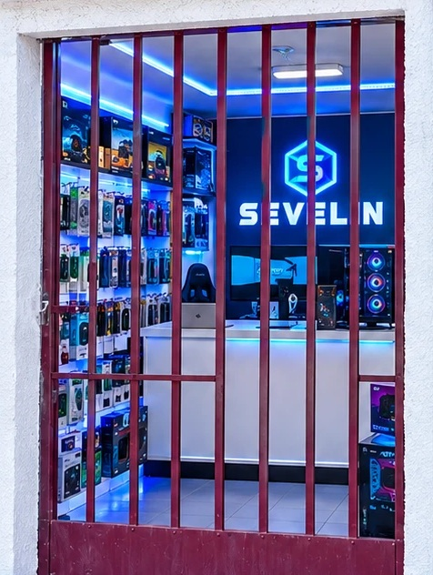

SEVELIN
Servicio técnico
y tecnología en Arica
Computadores y notebooks
Celulares
Garantía 6 meses
Lo tienes hoy
San Rafael 896
· entrada por Av. Robinson Rojas
+56 9 3575 0828
· 10:00–13:00 y 14:00–21:00

Visítanos:
te esperamos